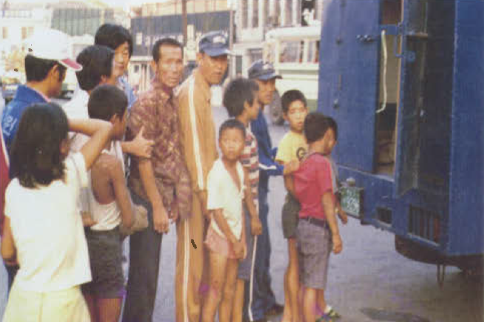
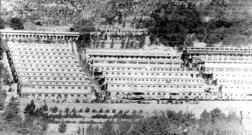

Historia real detras de la desigualdad que inspiro El Juego del Calamar
Un caso real que muestra como la explotacion y la desigualdad pueden superar incluso a la ficcion.


Introduccion
En 2021 millones de personas quedaron impactadas al ver la serie
El juego del calamar.
Una historia donde personas desesperadas participan en juegos crueles
mientras millonarios observan desde las sombras.
Pero decadas antes de que esa serie existiera, en Corea del Sur ocurrio
un caso real que mostro como la desesperacion, el poder y la desigualdad
pueden crear sistemas profundamente injustos.
Ese lugar fue conocido como Brothers Home.
El inicio de un sistema oscuro
Durante las decadas de 1970 y 1980 Corea del Sur atravesaba
un periodo de transformacion economica.
Las autoridades buscaban mostrar una imagen de orden y progreso.
Para lograrlo, muchas personas consideradas "indeseables"
fueron retiradas de las calles.
Entre ellas habia personas sin hogar, huerfanos,
personas con discapacidad y trabajadores pobres.
Muchas de estas personas fueron detenidas sin haber cometido delitos
y enviadas a centros de detencion llamados
"instituciones de bienestar".
Uno de los mas grandes fue Brothers Home,
ubicado en la ciudad de Busan.
Lo que ocurria dentro
Oficialmente Brothers Home era presentado como un centro de ayuda social.
Sin embargo, testimonios de sobrevivientes describen
una realidad completamente diferente.
Miles de personas vivian en condiciones dificiles
y eran obligadas a realizar trabajos forzados.
Durante anos el lugar funciono practicamente sin supervision
ni control publico.
Miles de victimas
Investigaciones posteriores revelaron que mas de
38.000 personas pasaron por Brothers Home.
Entre ellas habia ninos, adolescentes y adultos
que simplemente fueron detenidos en las calles.
El caso finalmente salio a la luz publica en
1987,
generando uno de los mayores escandalos sociales
en la historia moderna de Corea del Sur.
La inquietante conexion con El Juego del Calamar
Aunque la serie de Netflix no esta basada directamente
en Brothers Home,
ambas historias muestran una realidad inquietante:
personas vulnerables atrapadas en sistemas injustos.
En El juego del calamar los participantes
son personas endeudadas que aceptan competir
en juegos crueles para sobrevivir.
En Brothers Home miles de personas fueron encerradas
sin poder escapar de un sistema que controlaba
cada aspecto de sus vidas.
Ambas historias nos obligan a enfrentar una pregunta incomoda:
Que ocurre cuando la sociedad deja de ver
a algunas personas como seres humanos?
Un recordatorio incomodo
Hoy Brothers Home sigue siendo recordado
como un episodio oscuro en la historia
de Corea del Sur.
Aunque muchas personas nunca escucharon
hablar de este caso,
su historia demuestra que la explotacion
de los mas vulnerables no es solo un tema
de ficcion.
A veces la realidad puede ser mas perturbadora
que cualquier serie o pelicula.